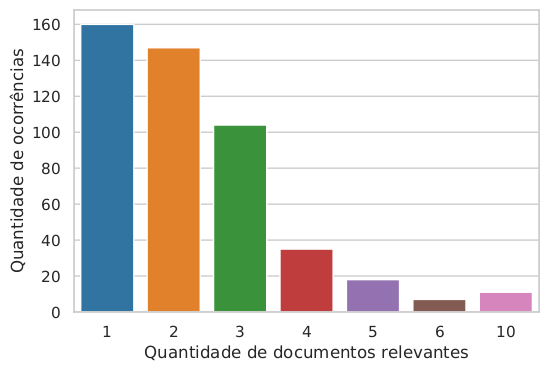
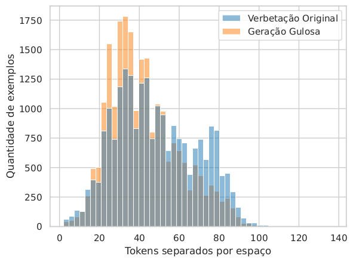

14 Geração Automática de Ementas Jurídicas
14.1 Introdução
14.1.1 Contextualização
Segundo dados do Conselho Nacional de Justiça (CNJ) (Justiça - CNJ, 24DC), ao final de 2022, havia 81,4 milhões de processos em trânsito no judiciário brasileiro, um aumento de 7,5% em relação ao ano anterior. O relatório também destaca que, nos casos mais extremos, o tempo de análise pode levar vários anos. Além do esforço humano necessário para a análise e elaboração dos documentos, é preciso alocar recursos financeiros para sua manutenção ao longo de todo o processo. Neste cenário, o aprimoramento de sistemas computacionais jurídicos, com a automação do fluxo de documentos, torna-se essencial para agilizar a tramitação no judiciário brasileiro.
Quadro 14.1 Exemplo de ementa. A verbetação está destacada em negrito.
Este Capítulo trata da geração automática de ementas, documentos amplamente utilizados em tribunais brasileiros, cuja função é fornecer um resumo de processos judiciais. As ementas oferecem uma representação sucinta e simplificada das decisões, permitindo que profissionais do Direito compreendam rapidamente o conteúdo sem a necessidade de ler o acórdão completo. Conforme demonstra o exemplo no Quadro 14.1, estes documentos usualmente contêm dois elementos principais: verbetações e parágrafos enumerados.
As verbetações são cabeçalhos constituídos por frases curtas, em caixa-alta, que descrevem os assuntos mais relevantes da decisão. Além de resumir o conteúdo, elas auxiliam na tarefa de busca e recuperação de jurisprudências (precedentes) (Guimarães; Santos, 2016). Por outro lado, os parágrafos enumerados expõem as teses da decisão, sendo que o último apresenta geralmente a conclusão do tribunal. Essa estrutura contribui para a agilidade no acesso à informação jurídica, facilitando a consulta à jurisprudência.
Vale destacar que, devido à sua estrutura e estilo, as verbetações assemelham-se a palavras-chave e a textos sumarizados. No entanto, diferentemente das palavras-chave, elas podem consistir em frases curtas. Além disto, enquanto resumos são redigidos de maneira fluida, as verbetações seguem um estilo linguístico único e rígido em comparação aos resumos. Um desafio adicional na redação das verbetações é que muitos dos termos utilizados não aparecem no restante da ementa, tornando sua produção uma tarefa que vai além da simples extração de informação.
Considerando as características do sistema judiciário brasileiro, os componentes das ementas e sua grande disponibilidade no Brasil, o objetivo deste Capítulo é apresentar métodos de PLN que propiciam a automatização da escrita de verbetações empregando os parágrafos enumerados como entradas para um modelo supervisionado generativo. Em específico, como Transformers (Brown et al., 2020; Carmo et al., 2020; Scao et al., 2022; Zhang et al., 2022) se mostraram efetivos em tarefas de geração de texto, neste capítulo os mesmos são avaliados na tarefa de geração de verbetações. O Quadro 14.2 ilustra exemplos de verbetações geradas por Transformers, nos quais fica evidente a capacidade desse modelo generativo, obtendo resultados semelhantes à verbetações escritas por especialistas.
Quadro 14.2 Exemplos de verbetações geradas por Transformers.
Este Capítulo apresenta mais uma aplicação de PLN na área do Direito, assim como as apresentadas no Capítulo PLN no Direito. São utilizados modelos de linguagem (descritos no Capítulo Modelos de linguagem) em uma tarefa de geração de texto, similar à tarefa de sumarização (Capítulo Sumarização Automática). A metodologia proposta descreve como a coleta de dados foi realizada, apresenta o modelo transformer utilizado e também a técnica de validação e métrica adotadas. Além disto, emprega-se conceitos de Recuperação de Informação (Capítulo Recuperação de Informação) para avaliação final das verbetações geradas.
14.1.2 Organização do Capítulo
Este Capítulo está organizado da seguinte forma. A Subseção Transferência de Aprendizado e Ajuste Fino introduz conceitos preliminares relacionados à aplicação. Em seguida, a Seção Geração de verbetações descreve a metodologia utilizada para a geração de verbetações. A Seção Avaliação utilizando RI detalha a metodologia adotada. Na sequência, os resultados obtidos são apresentados e discutidos na Seção Resultados e discussões. Por fim, conclusão é apresentada na Seção Conclusão.
14.2 Conceitos Preliminares
14.2.1 Transferência de Aprendizado e Ajuste Fino
Uma propriedade importante para a popularidade de Transformers em PLN é a Transferência de Aprendizado (TA). Como o próprio nome sugere, a técnica visa transferir conhecimento de um domínio para outro. Em outras palavras, busca-se generalizar o conhecimento adquirido em um domínio \(A\) para um domínio \(B\). É importante notar que essa transferência é mais vantajosa se os domínios estiverem de alguma forma relacionados (Zhuang et al., 2020).
Esta propriedade é útil em casos em que há uma grande diferença na quantidade de dados disponíveis no domínio e na tarefa alvo. Por exemplo, pensando no contexto de PLN, há uma abundância de textos disponíveis publicamente na web, porém, apenas uma fração é relacionada ao Direito (uma fração ainda menor, se considerarmos textos em português). Neste caso, a TA permite que um modelo seja treinado em um domínio com dados abundantes e, depois, treinado novamente no conjunto de dados destinado à tarefa alvo. Este segundo treinamento, por sua vez, é chamado de Ajuste Fino.
Um exemplo de TA no contexto de PLN utilizando Transformers é encontrado no modelo BERTimbau (Souza et al., 2020) (Transformer codificador). Inicialmente, ele foi treinado no corpus genérico brWaC (Wagner Filho et al., 2018). Ambos, modelo e corpus, foram apresentados no Capítulo Modelos de linguagem. O treinamento inicial foi feito em um grande volume de texto, visando aprender estruturas linguísticas comuns da língua portuguesa. Este treinamento é baseado em modelagem de linguagem (também discutido no Capítulo Modelos de linguagem). Similar ao modelo BERT, o modelo BERTimbau, gera representações para os tokens que podem ser utilizadas em diferentes tarefas de PLN, como classificação, reconhecimento de entidades nomeadas, agrupamentos etc.
Vale notar que o treinamento inicial não necessariamente corresponde à tarefa final na qual o modelo de aprendizado de máquina será empregado. Além disto, o pré-treinamento possibilita um bom desempenho na tarefa final, mesmo que esta não possua uma quantidade abundante de dados para o ajuste fino. Além disso, após essa etapa inicial de treinamento, os modelos pré-treinados podem ser disponibilizados publicamente 12. Este fato é interessante, pois possibilita que outros pesquisadores tenham à sua disposição modelos pré-treinados, prontos para serem utilizados em suas tarefas alvo de interesse.
14.2.2 Bilingual Evaluation Under-study (BLEU)
Para avaliar quantitativamente sistemas de geração de texto, muitas métricas foram propostas ao longo dos anos, como por exemplo a medida BLEU.
A métrica BLEU (Papineni et al., 2002) foi proposta originalmente para avaliar sistemas de tradução. De maneira simplificada, seu funcionamento envolve analisar a sobreposição entre as palavras (ou tokens) no texto gerado e aquelas nos textos de referência humanos. Na prática, as palavras são representadas por n-gramas (usualmente de uma a quatro palavras), após a tokenização dos textos. Os valores da métrica estão em uma faixa de 0 a 1, na qual uma pontuação mais próxima de 1 indica uma melhor qualidade no texto gerado.
Outra característica interessante é que a métrica considera todo o corpus de avaliação para seu cálculo. Assim, as estatísticas são obtidas a partir de todos os textos gerados e referências, sem realizar qualquer tipo de agregação, como uma média, para determinar a pontuação final.
Formalmente, o BLEU está definido da seguinte forma:
\[ BLEU = Penalidade \times \Big(\prod_{i=1}^{4}Precis\tilde{a}o_i\Big)^{1/4} \tag{14.1}\]
\[ Penalidade = \min\Big(1, \exp\big(1-\frac{\text{tamanho da refer\^encia}}{\text{tamanho do texto gerado}}\big)\Big) \tag{14.2}\]
\[ Precis\tilde{a}o_i = \dfrac{\sum_{\text{tg}\in\text{Gerados}}\sum_{i\in\text{tg}}\min(c^i_{gerado}, c^i_{ref)}} {C_t^i = \sum_{\text{tg'}\in\text{Gerados}}\sum_{i'\in\text{tg'}} c^{i'}_{gerado}} \tag{14.3}\]
na qual \(i\) define o i-ésimo n-grama, \(tg\) corresponde a um texto gerado, \(c^i_{gerado}\) corresponde ao número de ocorrências simultâneas do i-grama na referência e no texto gerado, \(c^i_{ref}\) corresponde ao número de ocorrências da i-grama no texto de referência, \(c^{i'}_{tg}\) denota a quantidade de n-gramas no texto gerado e \(C_t^i\) informa o número total de i-gramas dos textos gerados.
Na fórmula apresentada, o componente de Penalidade (Equação 14.2) penaliza a produção de textos curtos, já que seu valor diminui à medida que os textos gerados são menores. Já que o número de termos no texto gerado influencia o denominador da Equação 14.3, quando esse valor é pequeno, facilita-se maximizar a precisão. Logo, a penalidade atua para incentivar a geração de textos mais longos. Note que os tamanhos são calculados considerando todos os exemplos, tanto os gerados quanto os de referência.
Em sequência, a Equação 14.3 ilustra um cálculo de precisão no qual verifica-se qual porcentagem dos n-gramas ocorre tanto no texto gerado quanto no texto de referência.
A Equação 14.1 define o BLEU, combinando componentes mencionados anteriormente. Como se pode observar, a métrica BLEU é a média harmônica das precisões dos n-gramas (tipicamente, entre 1 e 4), com uma penalização pelo tamanho do texto gerado.
Em suma, o BLEU destaca-se por sua simplicidade e rapidez de cálculo, além de estar correlacionado positivamente com as avaliações humanas (Papineni et al., 2002). No entanto, é importante reforçar que sua principal limitação está na falta de consideração dos aspectos semânticos dos textos comparados, já que sua metodologia se baseia no casamento de n-gramas. Além disso, a métrica é sensível ao método de tokenização utilizado.
14.3 Geração de verbetações
Neste Capítulo, serão apresentados os componentes da metodologia proposta para o desenvolvimento desta aplicação. Iniciando pelos dados utilizados, a Subseção Aquisição de dados discute a coleta dos documentos. Em seguida, a metodologia empregada para a geração automática de verbetações e sua avaliação é discutida na Subseção Geração textual. Mais detalhes a respeito da metodologia podem ser encontrados em (Sakiyama, 2023).
14.3.1 Aquisição de dados
Em 2022, como parte de um movimento em direção à transparência administrativa, o Supremo Tribunal de Justiça (STJ) lançou a plataforma Dados Abertos3. Este domínio público destina-se ao compartilhamento de decisões judiciais de diversos tribunais do Brasil, sendo estas julgadas por ministros do STJ. Além de promover a transparência, a plataforma foi criada visando reduzir o uso de web scrappers no portal oficial do STJ e estimular a pesquisa e o desenvolvimento de ferramentas baseadas em inteligência artificial que dependem da disponibilidade de dados.
As ementas coletadas estão classificadas em seções. Estas representam as seções do STJ e se diferenciam pelos temas jurídicos julgados. Por exemplo: impostos (primeira seção), comércio (segunda seção) e crimes no geral (terceira seção) (STJ, 24DC). Desta forma, os documentos obtidos abrangem uma ampla variedade de temas do contexto jurídico brasileiro. Para o desenvolvimento desta pesquisa foram coletados um total de 726.384 documentos da plataforma (a coleta ocorreu em agosto de 2022) e foram analisadas as ementas dos processos obtidos.
14.3.2 Geração textual
Nesta Seção, é apresentada a metodologia utilizada para geração das verbetações e sua avaliação.
14.3.2.1 Preparação de exemplos para geração de texto
Para a preparação de entradas para o modelo generativo escolhido, verbetações e parágrafos enumerados foram separados, por meio da identificação de frases iniciadas por letras maiúsculas. Assim, as verbetações originais extraídas passam a compor o conjunto de referência (conjunto ouro ou gold standard) a ser usado para avaliar a qualidade das verbetações geradas pelas estratégias estudadas.
Feito o processamento adicional, o corpus final foi dividido em três conjuntos: treino (70%), validação (10%) e teste (20%). Tal divisão foi feita de forma estratificada, para preservar as proporções das origens (seções de julgamento) dos documentos. Este procedimento foi feito visando uma avaliação utilizando a técnica de validação cruzada (mais detalhes no Capítulo Avaliação de tecnologias de linguagem).
A fim de ilustrar aos leitores os tamanhos dos parágrafos enumerados e das verbetações, na Tabela 14.1 é sumarizada a análise estatística descritiva da variação dos tamanhos dos tokens presentes no conjunto de treinamento. Dentre as medidas foram calculadas a média, o desvio padrão e os 3 quartis: Q1, Q2 e Q3. O conjunto em questão possui cerca de 1,6 milhão de tokens. Os parágrafos enumerados têm, em média, 203,26 tokens, enquanto as verbetações têm, em média, 55,84 tokens. Os valores do desvio padrão revelam que os tamanhos dos parágrafos enumerados e das verbetações variam consideravelmente.
| Média | Desvio Padrão | Q1 | Q2 | Q3 | |
|---|---|---|---|---|---|
| Parágrafos enumerados | 203,262 | 183,332 | 92 | 155 | 253 |
| Verbetação | 55,842 | 32,136 | 34 | 49 | 69 |
14.3.2.2 Transformers para geração de verbetações
Como mencionado anteriormente, as verbetações podem conter termos que não estão presentes no corpo da ementa (parágrafos enumerados). De fato, ao analisar os documentos do conjunto de validação, observou-se que apenas cerca de 10% dos termos das verbetações estão contidos no restante do texto. Sendo assim, optou-se por abordar a geração de verbetações como sendo uma geração de sequência-a-sequência (ou texto-para-texto). Utilizou-se o conteúdo dos parágrafos enumerados como entrada para os modelos Transformers, enquanto que as verbetações originais foram consideradas como as saídas desejadas.
Estudos anteriores (Carmo et al., 2020; Rosa et al., 2021a; Souza et al., 2020) apontam que modelos pré-treinados para a linguagem da tarefa tendem a superar os modelos multilíngues nas mesmas tarefas. Em experimentos detalhados em (Sakiyama, 2023), o modelo PTT5 (Carmo et al., 2020)4, ajustado para português brasileiro, destacou-se como o mais eficaz, e seus resultados serão reportados aqui. Este modelo foi pré-treinado no corpus brWaC e foi utilizada sua versão base (com 220M de parâmetros). Tendo treinado o modelo PTT5, a geração de verbetações foi feita usando uma simples decodificação gulosa (que consiste sempre em escolher o token mais provável na geração).
14.3.2.3 Avaliação dos textos gerados
A avaliação dos textos gerados pelo modelo de língua PTT5 foi feita empregando-se a metodologia descrita no Capítulo Avaliação de tecnologias de linguagem. Utilizou-se a técnica de amostragem holdout para validação e a métrica BLEU (Bilingual Evaluation Under-study) para quantificar a qualidade dos textos gerados.
A fim de aprofundar a avaliação, foram realizadas outras análises comparativas entre o texto gerado e as entradas originais. Por exemplo, os tamanhos das entradas geradas pelo melhor modelo foram comparados com os das entradas originais, bem como a quantidade de palavras (tokens) copiadas e geradas. Palavras ‘novas’ (ou geradas) são aquelas que não aparecem nos parágrafos enumerados, utilizados na geração de verbetações.
14.4 Avaliação utilizando RI
Para a avaliação final das verbetações geradas, elas foram concatenadas aos seus documentos originais para simular um caso de uso real em uma tarefa de Recuperação de Informação (RI). Foram empregadas tanto a decodificação gulosa quanto a decodificação por amostragem na geração das verbetações nesta avaliação. Mais detalhes a respeito da avaliação experimental podem ser encontrados em (Sakiyama, 2023).
14.4.1 Formulação da tarefa
Os documentos apresentados na Subseção Aquisição de dados, juntamente com o texto da ementa, contêm metadados úteis, entre eles, o tema da decisão. Tais temas, ou temas de recursos repetitivos, consistem em identificadores únicos que correspondem a questões jurídicas comuns. Cada documento pode estar associado a mais de um tema, e há mais de mil temas distintos listados no STJ5. Exemplos desses temas estão ilustrados no Quadro 14.3.
Quadro 14.3 Exemplos de temas de recursos repetitivos, listados pelo STJ.
Com base nos temas, foi utilizada a definição binária de relevância para formular a seguinte tarefa de RI: dado um documento de consulta \(Q\), os documentos relevantes \(R\) devem pertencer ao mesmo tema de \(Q\). Esta formulação simula o caso de uso em que um advogado busca processos semelhantes a um caso base, por exemplo. A formulação apresentada é semelhante à utilizada por Ostendorff et al. (2021), na qual foram criados pares de relevância (documento de consulta e documento relevante) usando decisões da Suprema Corte dos Estados Unidos. As decisões foram categorizadas por livros de casos ou categorias pré-definidas.
Em resumo, na avaliação proposta, ementas são usadas para buscar outras ementas. Para imitar o cenário real nos experimentos, foram empregadas ementas completas (incluindo verbetações e parágrafos enumerados). Foram utilizadas ementas completas em todos os experimentos, exceto o primeiro, que será discutido na próxima Seção.
Entre as ementas coletadas, apenas 801 possuíam anotações de tema, com 99,3% apresentando valores ausentes. Estas ementas foram removidas do conjunto de treinamento dos geradores de texto e utilizadas para compor pares de consulta e documentos relevantes nos experimentos com RI. Foram filtrados temas que apareceram pelo menos duas vezes, resultando em 482 consultas.

A Figura 14.1 mostra uma visualização do número de documentos relevantes (com o mesmo tema) por documento de consulta. Observa-se que a maioria das consultas possui entre 1 e 3 documentos relevantes. No caso mais extremo, uma consulta pode ter até 10 documentos relevantes.
Para criar o corpus final de busca para a tarefa mencionada, foram combinados os 801 documentos com tema ao conjunto de teste discutido na Subseção Preparação de exemplos para geração de texto, totalizando 23.194 documentos. Esta combinação foi feita visando tornar a tarefa de RI mais desafiadora, pois a mesma pode incluir falsos negativos ao corpus de busca, que acabam prejudicando as métricas de RI. Falsos negativos são documentos que têm o mesmo tema da consulta, mas são considerados irrelevantes por não possuírem anotação de tema (dado ausente).
14.4.2 Experimentos realizados
A avaliação baseada em RI foi conduzida por meio de dois experimentos distintos. Todos os experimentos utilizaram métodos de decodificação simples (decodificação gulosa) e métodos não determinísticos (decodificação com amostragem). Seus detalhes serão descritos a seguir.
Comparação de documentos com e sem verbetações: a influência das verbetações na tarefa de RI foi avaliada, analisando-se métricas de RI para buscas, usando documentos com e sem suas verbetações originais, tanto para documentos de consulta quanto para documentos do corpus de busca. Este experimento teve como objetivo validar o papel das verbetações no contexto de uma tarefa de RI.
Avaliação das verbetações geradas: neste experimento, foi investigado o efeito de usar verbetações geradas no lugar das originais. O texto gerado foi concatenado ao início de ambos os documentos de consulta e dos documentos do corpus de busca. O objetivo deste experimento é verificar se as verbetações artificiais melhoram as métricas de RI em comparação com a ausência de verbetações. Para este experimento, foram usadas verbetações geradas com decodificação gulosa.
14.4.3 Métodos de RI avaliados
Dois métodos tradicionais de RI para a tarefa descrita anteriormente: TF-IDF e BM25 (Robertson; Walker, 1999) foram considerados para a avaliação. Tais métodos são amplamente utilizados em sistemas de busca populares (como Lucene6), e são frequentemente adotados como base em comparações de desempenho de algoritmos (Pradeep et al., 2020; Rosa et al., 2021b). Além disto, conforme investigado por estudos anteriores (Lima et al., 2021; Mandal et al., 2021), métodos de representação esparsa tendem a apresentar melhor desempenho em tarefas similares no domínio jurídico. Tendo apresentado os modelos investigados, a seguir serão apresentados mais detalhes sobre suas execuções.
14.4.4 Ordenação dos documentos
Ao utilizar o método TF-IDF para realizar as buscas, calculou-se a similaridade de cosseno entre consultas e documentos e os documentos do corpus foram ordenados a partir de suas semelhanças em ordem decrescente. Já o método BM25 utiliza o Princípio de Classificação por Probabilidade (Probability Ranking Principle) para estimar a relevância de um documento para uma consulta (Crestani et al., 1998). Logo, os documentos foram ordenados com base em suas relevâncias estimadas.
14.4.5 Métricas avaliadas
Para avaliar de forma quantitativa o desempenho da busca e, em adição, a qualidade das verbetações geradas, foram computadas métricas tradicionais de RI. As métricas utilizadas foram: Mean Reciprocal Rank (MRR), Normalized Discounted Cumulative Gain (NDCG), Revocação, Precisão e Mean Average Precision (MAP).
Utilizou-se os 10 primeiros documentos ordenados para o cálculo das métricas mencionadas. Este limite foi escolhido para simular um cenário restritivo, em que o usuário investiga somente até 10 documentos. Conforme (Russell-Rose et al., 2018), profissionais do Direito geralmente aceitam analisar até 50 documentos em suas consultas. Portanto, este estudo avalia um cenário ainda mais desafiador do que o mencionado pelos autores.
14.5 Resultados e discussões
Esta Seção apresenta e discute os resultados obtidos na geração de verbetações e sua avaliação usando RI.
14.5.1 Comparação entre verbetações originais e geradas
Como apontado na Subseção Transformers para geração de verbetações, as verbetações foram geradas usando o modelo PTT5, o qual obteve uma pontuação BLEU de 38,607 no conjunto de teste preparado. Nesta Seção, serão mostrados exemplos (Quadros 14.4, 14.5 e 14.6) dos textos gerados e os mesmos também serão comparados com as verbetações originais.
Ao avaliá-las qualitativamente (Quadro 14.4), observa-se que, com pontuações BLEU próximas a 40%, as verbetações geradas não apresentam erros ortográficos ou léxicos. Elas simulam o estilo de escrita das verbetações originais e são bastante similares a elas. Além disto, fica evidente que as verbetações geradas não são cópias perfeitas das originais, uma vez que nem todos os termos das verbetações originais estão nas geradas. Assim, os resultados da geração textual com Transformers foram muito positivos, se consideramos o tamanho do conjunto de treinamento utilizado neste caso (menos de 100 mil exemplos).
Quadro 14.4 Exemplos de verbetações geradas, destacando-se termos em comum (idênticos) entre as verbetações.
Quadro 14.5 Mais exemplos de verbetações geradas. Termos em comum foram destacados em verde. Parafrases ou sinônimos foram destacados em amarelo.
Quadro 14.6 Exemplo de verbetação em que são introduzidos termos não presentes na verbetação original.
Dando prosseguimento às comparações, ao analisarmos o Quadro 14.5, é possível observar uma característica interessante. Houve casos em que o PTT5 gerou paráfrases ou expandiu siglas presentes na verbetação original. Tal fato é facilmente perceptível no Quadro 14.5, observando os termos “SERVIDOR PÚBLICO” e “AGENTE PÚBLICO”. Por outro lado, siglas como “CF/1998” foram expandidas para “CONSTITUIÇÃO FEDERAL DE 1998”, assim como “EC” foi expandida para “EMENDA CONSTITUCIONAL”. Os comportamentos observados são justificados pelo funcionamento de modelos de linguagem baseados em Transformers, uma vez que, durante a geração de texto, os mesmos tendem a gerar tokens que aparecem em contextos semelhantes.
Como última discussão de exemplos, o Quadro 14.6 ilustra potenciais alucinações do modelo avaliado. Como o modelo PTT5 está na família de Transformers generativos, o mesmo não está isento de alucinações, como é o caso dos mais conhecidos (GPT’s, por exemplo). Dentro do contexto desta aplicação e focando no Quadro 14.6, é possível notar a presença de termos e citações de artigos que não constam no texto original.
Embora esses termos possam surgir em contextos parecidos, não se deve ignorar a possibilidade de que tenham sido gerados por alucinações do Transformer. Sem o conhecimento específico do domínio, não é possível assegurar que tais termos “novos” estejam realmente associados ao texto de entrada. Pode-se apenas supor que eles ocorrem em contextos semelhantes. Assim, existe sim o risco de adicionar textos factualmente incorretos às verbetações geradas, devido ao processo generativo.
A investigação da métrica BLEU permite estimar a quantidade de termos em comum entre as verbetações de referências e as geradas, ao comparar a interseção de n-gramas em ambas. Como a métrica é computada considerando o corpus de teste inteiro, ela apresenta uma boa estimativa do casamento de n-gramas entre todas as verbetações originais e geradas. Para aprofundar a comparação entre as verbetações, na Figura 14.2 é apresentada uma comparação entre o número de tokens das verbetações originais e das verbetações geradas com decodificação gulosa.

Embora as distribuições apresentadas pelos dois histogramas sejam semelhantes, fica evidente que as verbetações geradas tendem a ter uma concentração maior de exemplos abaixo de 60 tokens. Além disto, ao analisar todas a verbetações mostradas anteriormente (Quadros 14.2, 14.4, 14.5 e 14.6) fica evidente que as mesmas tendem a ter menos palavras do que as referências. Assim, podemos concluir que as verbetações geradas tendem a ser mais curtas que as originais.
14.5.2 Experimentos com RI
A Seção anterior apresentou comparações qualitativas entre as verbetações geradas pelo método PTT5 e as originais. Resta verificar como as verbetações originais e geradas se comportam na avaliação, usando um caso real de RI descrito na Seção Avaliação utilizando RI. Vale observar que as métricas mostradas em todas as tabelas desta Seção consistem em médias obtidas para cada métrica considerando as 482 consultas.
14.5.2.1 Comparação de documentos com e sem verbetações
A Tabela 14.2 mostra as métricas obtidas ao realizar o primeiro experimento com documentos com e sem as verbetações originais. Observa-se que o uso de verbetações melhora todas as métricas avaliadas, com maiores ganhos para o método BM25. Tais resultados eram esperados, pois a adição de termos discriminatórios nos documentos beneficia os métodos esparsos. Assim, os resultados indicam que o uso de palavras-chave tem um impacto positivo na tarefa de busca. O maior ganho foi observado na métrica R@10 (4,2 pontos percentuais) para TF-IDF e na MAP@10 (6,1 pontos percentuais) para BM25.
| TF-IDF | |||||
|---|---|---|---|---|---|
| MRR@10 | NDCG@10 | R@10 | P@10 | MAP@10 | |
| Sem verbetações | 0,806 | 0,745 | 0,790 | 0,191 | 0,691 |
| Verbetações originais | 0,825\(^{*}\) | 0,780\(^{*}\) | 0,832\(^{*}\) | 0,201\(^{*}\) | 0,729\(^{*}\) |
| BM25 | |||||
| Sem verbetações | 0,819 | 0,805 | 0,878 | 0,212 | 0,754 |
| Verbetações originais | 0,879\(^{*}\) | 0,858\(^{*}\) | 0,916\(^{*}\) | 0,222\(^{*}\) | 0,815\(^{*}\) |
14.5.2.2 Avaliação das verbetações geradas
Iniciando os experimentos com as verbetações geradas, a Tabela 14.3 apresenta a avaliação das verbetações geradas com decodificação gulosa. Observa-se que, ao adicionar as verbetações artificiais aos documentos, houve melhorias em quase todas as métricas para ambos os modelos avaliados. Para o método TF-IDF, a diferença foi estatisticamente significativa em todas as métricas avaliadas.
| TF-IDF | |||||
|---|---|---|---|---|---|
| MRR@10 | NDCG@10 | R@10 | P@10 | MAP@10 | |
| Sem verbetações | 0,806 | 0,745 | 0,790 | 0,191 | 0,691 |
| Geradas | 0,822\(^{*}\) | 0,770\(^{*}\) | 0,815\(^{*}\) | 0,196\(^{*}\) | 0,718\(^{*}\) |
| BM25 | |||||
| Sem verbetações | 0,819 | 0,805 | 0,878 | 0,212 | 0,754 |
| Geradas | 0,854\(^{*}\) | 0,819\(^{*}\) | 0,877 | 0,211 | 0,768 |
Quanto ao BM25, houve ganhos em quase todas as métricas. No entanto, a diferença foi estatisticamente significativa apenas para duas métricas (MRR@10 e NDCG@10). Embora tenham ocorrido melhorias para o TF-IDF, os resultados sugerem que o modelo BM25 foi mais sensível a falsos positivos e falsos negativos, introduzidos no corpus de busca por verbetações ruidosas geradas pelo PTT5. Assim, houve quase nenhuma alteração nas métricas baseadas em revocação e precisão.
As métricas analisadas mostram que ambos os modelos tiveram desempenho inferior em relação ao experimento anterior utilizando as verbetações originais (Tabela 14.2). Este resultado já era esperado, pois os resultados com verbetações originais atuam como um limite superior para este experimento. Mesmo com este cenário, o uso de verbetações artificiais melhorou ambos os métodos de RI em comparação à ausência de verbetação, evidenciando o potencial da geração automática de verbetações.
14.6 Conclusão
Nesta aplicação, utilizou-se modelos Transformers para a automação da escrita de verbetações presentes em ementas de processos judiciais brasileiros. O Transformer usado, PTT5, alcançou uma pontuação BLEU superior a 37% na geração textual. Em outras palavras, ao comparar as verbetações geradas com as originais, foi possível comprovar que as verbetações geradas foram capazes de reproduzir com fidelidade as características principais das verbetações escritas por especialistas.
Além disso, notou-se que as verbetações geradas capturaram com sucesso o estilo linguístico das verbetações originais. As frases curtas e objetivas, presentes nas verbetações, também são características das geradas. O modelo também foi capaz de reconhecer e expandir siglas comuns (como “CF” e “EC”).
Como a geração não é perfeita, também foi identificada a ocorrência de alucinações do modelo generativo usado e seus potenciais malefícios. Verificou-se também que as verbetações geradas tenderam a conter menos termos que as originais. Mesmo com estas ressalvas, os resultados qualitativos e quantitativos são evidências de que a geração automática de textos jurídicos é de fato possível.
Note que, em virtude das ressalvas (principalmente das alucinações), a automação completa da escrita de verbetações não é recomendada. Contudo, a metodologia apresentada aqui pode ser útil para auxiliar na escrita de ementas. Como exemplo, os Transformers podem ser incorporados a sistemas existentes, gerando automaticamente sugestões de verbetações (ou templates), que podem, então, serem corrigidas por especialistas, conforme a necessidade.
Considerando que o setor judiciário brasileiro convive com um crescente volume de processos para análise e que todo processo demanda tempo e recursos financeiros, qualquer esforço rumo à automatização é sem dúvida muito bem-vindo. Sendo assim, acredita-se que os resultados aqui apresentados possam estimular outros trabalhos no domínio jurídico, mostrando o potencial de modelos generativos em domínios com grandes demandas sobre recursos textuais.
Agradecimentos
O presente trabalho foi realizado com apoio da Coordenação de Aperfeiçoamento de Pessoal de Nível Superior – Brasil (CAPES) – Código de Financiamento 001. Os autores agradecem também ao CEMEAI, pelo acesso ao cluster Euler, para a realização de experimentos.